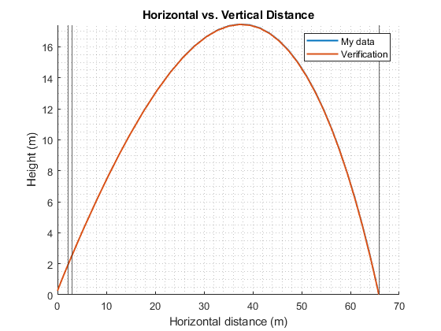
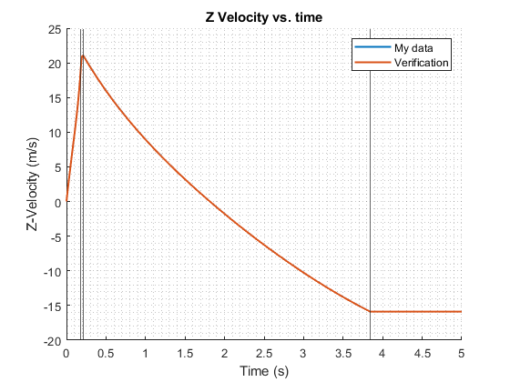

Contents
close all; clear; clc;
Constants and initial conditions
const = getConst();
vx0 = const.v_0*cos(const.theta_i);
vz0 = const.v_0*sin(const.theta_i);
initial_conditions = [const.x_0 ; vx0 ; const.z_0 ; vz0 ; const.m_0tot ; const.V_0a ; const.m_0a];
int_time = [0 5];
int_fun = @(t,state) state_matrix_func(const,t,state);
Integration and Thrust Calculation
[tout,stateOut] = ode45(int_fun,int_time,initial_conditions);
thrust = zeros(length(tout),1);
stage = zeros(length(tout),1);
for i = 1:length(tout)
[~,thrust(i),stage(i)] = state_matrix_func(const,tout(i),stateOut(i,:));
end
Verification data
verification = load('project2verification.mat');
time_verification = verification.verification.time;
height_verification = verification.verification.height;
distance_verification = verification.verification.distance;
thrust_verification = verification.verification.thrust;
velocity_x_verification = verification.verification.velocity_x;
velocity_z_verification = verification.verification.velocity_y;
volume_air_verification = verification.verification.volume_air;
Stage calculations
stage2 = find(stage==2,1);
stage3 = find(stage==3,1);
stage4 = find(stage==4,1);
transition1_time = tout(stage2);
transition2_time = tout(stage3);
transition3_time = tout(stage4);
transition1_x = stateOut(stage2,1);
transition2_x = stateOut(stage3,1);
transition3_x = stateOut(stage4,1);
Maxima of rocket states
maxX = max(stateOut(:,1));
maxZ = max(stateOut(:,3));
maxF = max(thrust);
fprintf('Max horizontal distance: %2.2f m\n',maxX);
fprintf('Max vertical distance: %2.2f m\n',maxZ);
fprintf('Max thrust: %2.2f N\n',maxF);
Max horizontal distance: 65.83 m
Max vertical distance: 17.46 m
Max thrust: 198.69 N
Plots
figure(1);
hold on;
plot(stateOut(:,1),stateOut(:,3),'LineWidth',1.5);
plot(distance_verification,height_verification,'LineWidth',1.5);
xline(transition1_x);
xline(transition2_x);
xline(transition3_x);
grid minor;
legend('My data','Verification');
ylabel('Height (m)');
xlabel('Horizontal distance (m)');
title('Horizontal vs. Vertical Distance');
ylim([0,max(height_verification)]);
hold off;
figure(2);
hold on;
plot(tout,thrust,'linewidth',1.5);
plot(time_verification,thrust_verification,'LineWidth',1.5);
xline(transition1_time);
xline(transition2_time);
xline(transition3_time)
legend('My data','Verification');
ylabel('Thrust (N)');
xlabel('Time (s)');
grid minor;
xlim([0,0.5]);
title('Thrust vs. Time');
hold off;
figure(3);
hold on;
plot(tout,stateOut(:,6),'linewidth',1.5);
plot(time_verification,volume_air_verification,'linewidth',1.5);
xline(transition1_time);
xline(transition2_time);
xline(transition3_time);
grid minor;
ylabel('Air Volume (m^3)');
xlabel('Time (s)');
legend('My data','Verification');
xlim([0,0.5]);
title('Air Volume vs. Time')
hold off;
figure(4);
hold on;
plot(tout,stateOut(:,2),'linewidth',1.5);
plot(time_verification,velocity_x_verification,'LineWidth',1.5);
xline(transition1_time);
xline(transition2_time);
xline(transition3_time);
legend('My data','Verification');
grid minor;
xlabel('Time (s)');
ylabel('X-Velocity (m/s)');
title('X Velocity vs. time');
hold off;
figure(5);
hold on;
plot(tout,stateOut(:,4),'linewidth',1.5);
plot(time_verification,velocity_z_verification,'LineWidth',1.5);
xline(transition1_time);
xline(transition2_time);
xline(transition3_time);
grid minor;
xlabel('Time (s)');
ylabel('Z-Velocity (m/s)');
legend('My data', 'Verification');
title('Z Velocity vs. time');
hold off;
 